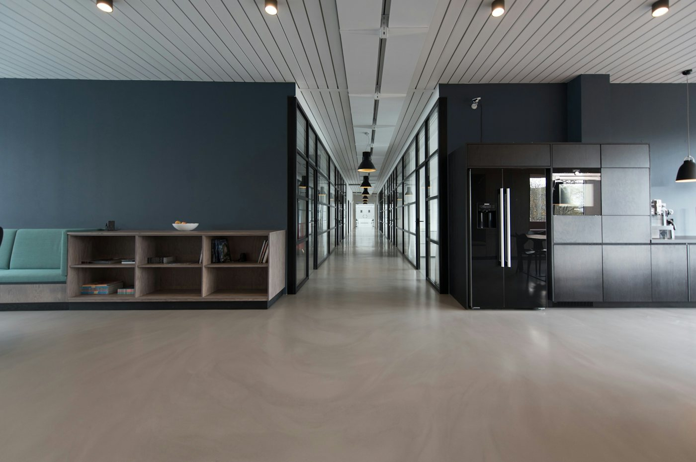

Estratégia e crescimento
Onde investir nos próximos três anos, o que abandonar e quanto isso custa.
Curitiba — PR · Desde 2009
Estratégia, finanças e sucessão para empresas de médio porte, com parte dos honorários atrelada ao resultado.
Marcar uma conversa
Onde investir nos próximos três anos, o que abandonar e quanto isso custa.
Margem por produto, por cliente e por canal, com orçamento que as áreas cumprem.
Quem decide o quê, como a família participa e como a próxima geração entra.
Estrutura comercial, metas, comissões e política de preços por perfil de cliente.
Nenhum projeto começa sem um número combinado e nenhum termina com um relatório na gaveta.
Entrevistas com a liderança, leitura dos números dos últimos 36 meses e visita à operação.
Definimos juntos o resultado esperado, o prazo e como ele será medido.
Um sócio e um consultor dentro da empresa dois dias por semana, com a sua equipe.
Reunião mensal de resultados por um ano, sem custo adicional.

+7,2pontos de margem, em média, nos projetos de finanças
Refizemos a política de preços e encerramos 14% do portfólio, que dava prejuízo. A margem passou de 4,1% para 11,3% em dez meses.
140empresas atendidas
Indústria, distribuição, saúde e serviços, sempre em empresas de cinquenta a quinhentos funcionários.
15anos de atuação
Os sócios somam mais de quarenta anos em cargos de diretoria financeira e comercial.

Vinte anos em finanças corporativas, doze deles como diretor financeiro em indústrias de médio porte.

Ex-diretora comercial de distribuidora nacional. MBA pelo Insper.
A primeira conversa dura uma hora, não custa nada e é com um dos sócios.